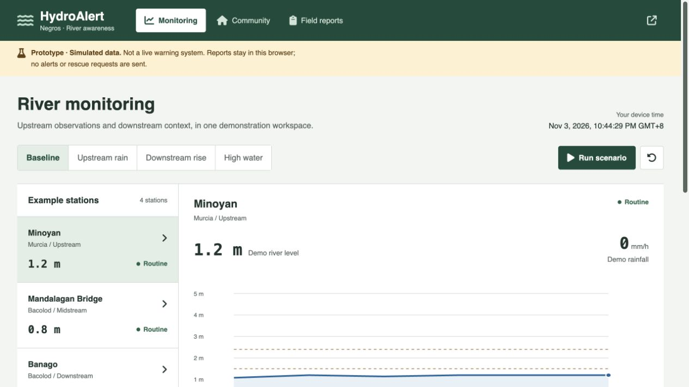

HydroAlert Negros
A river-awareness prototype linking simulated monitoring, community context, and local field reports.
- Development focus
- Interface and scenario development
- Technology
- HTML · CSS · JavaScript · IndexedDB
- Source last updated

The problem
An early-warning concept needs to explain how upstream observations and downstream context relate, without giving residents false confidence in a simulated system.
The approach
The prototype separates monitoring, community information, and field reporting. Replayable scenarios demonstrate changing synthetic levels; field observations can be stored locally in the browser.
The challenge
Present a convincing monitoring workflow while keeping simulated readings and locally stored reports unmistakable.
Keep a visible prototype notice, label synthetic readings, separate device time from observation data, and state that reports are not transmitted to authorities.
What the project demonstrates
Three connected views demonstrate station selection, scenario changes, community awareness, and browser-local field reporting.
- Monitoring provides Baseline, Upstream rain, Downstream rise, and High water scenarios.
- Station readings and the water-level trace are explicitly labeled synthetic.
- The source includes separate community and mobile field-report views with local persistence.
Explore the published interface and public implementation.
Scope & limitations
No sensor feed or validated flood-prediction model is connected. The prototype does not send warnings, deliver reports to officials, or dispatch help. No warning lead time or prediction accuracy is claimed.
Next steps
Validate requirements with domain experts before introducing sensor feeds, delivery services, or predictive models.
Case study reviewed 3 November 2026. Source dates refer to the most recent recorded changes, rather than project start or completion dates.